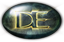
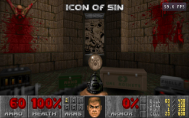
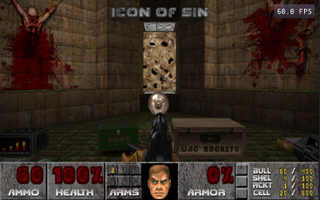
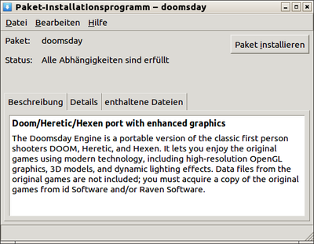
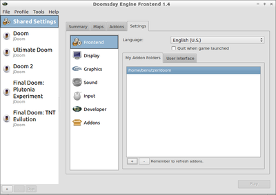
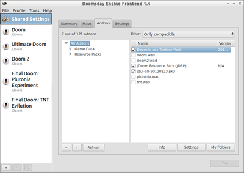
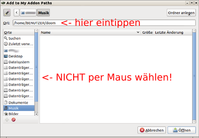

Doomsday Engine
Dieser Artikel wurde für die folgenden Ubuntu-Versionen getestet:
Ubuntu 16.04 Xenial Xerus
Zum Verständnis dieses Artikels sind folgende Seiten hilfreich:

Die Doomsday Engine  ist eine 3D-Spiele-Engine, die es ermöglicht, die klassischen Ego-Shooter Doom, Heretic und Hexen von id-Software mit moderner Technik zu spielen. Dazu gehören beschleunigte 3D-Grafik, Surround-Sound und Addons, die es unter Anderem ermöglichen, echte 3D-Figuren in die Spiele einzubinden.
ist eine 3D-Spiele-Engine, die es ermöglicht, die klassischen Ego-Shooter Doom, Heretic und Hexen von id-Software mit moderner Technik zu spielen. Dazu gehören beschleunigte 3D-Grafik, Surround-Sound und Addons, die es unter Anderem ermöglichen, echte 3D-Figuren in die Spiele einzubinden.
Um die Doom-Reihe unmodifiziert und möglichst originalgetreu zu spielen bietet sich Chocolate Doom an; Hier wird auch kein Grafikkartentreiber mit 3D-Beschleunigung benötigt.
Hinweis:
Die Doomsday-Engine selber ist Freie Software, die Spiele sind jedoch urheberrechtlich geschützt. Falls nicht zur Hand, finden sich diese recht günstig bei einschlägig bekannten Gebrauchtwarenbörsen bzw. im Fachhandel.
|  |  |
| Aufgewertete Originalgrafik | Neue 3D-Grafik durch Addons |
Installation¶
Paketquelle¶
Die Doomsday-Engine ist in den offiziellen Paketquellen von Ubuntu enthalten [1]:
doomsday (universe )
 mit apturl
mit apturl
Paketliste zum Kopieren:
sudo apt-get install doomsday
sudo aptitude install doomsday
Benötigt werden die originalen Archivdateien der Spiele, welche sich an der Endung *.wad erkennen lassen. Verfügt man über keine wad-Dateien, kann zumindest die erste Episode von Doom1 gespielt werden, indem die Shareware aus den Paketquellen geladen wird:
doom-wad-shareware (multiverse, optional )
mit apturl
Paketliste zum Kopieren:
sudo apt-get install doom-wad-shareware
sudo aptitude install doom-wad-shareware
Die Datei findet sich anschließend unter /usr/share/games/doom/
Fremdpakete¶
Hinweis!
Fremdpakete können das System gefährden.
Die Entwickler bieten auf ihrer Sourceforge-Projektseite die aktuellen Versionen als DEB-Paket für die verschiedenen Architekturen an (doomsday_1.10.xx-buildxyz_amd64.deb für 64-Bit Systeme oder doomsday_1.10.xx-buildxyz_i386.deb für i386 Systeme)[4].
 Möchte man anstelle des üblichen SDL lieber die FMOD-Bibliothek verwenden, muss diese auf die gleiche weise geladen und installiert werden.
Erweiterungen (Auszug)¶
Möchte man die klassischen Spiele modernisieren, bieten sich die folgenden Doomsday-Addons an:
| Addon Name | Funktion | Hinweise |
| DOOM High-resolution Texture Project | hochauflösende Texturen für Wände und Außenansichten in den Doom-Spielen | auf Downloads, dann das Paket für Doomsday suchen (normalerweise das zweite von oben) und herunterladen |
| jDRP (packaged) | hochauflösende Monster, Waffen und sonstige Objekte in den Doom-Spielen | aktuelle Datei namens jdrp-packaged-xxxxyyzz.zip suchen und herunterladen (nur über das BitTorrent-Protokoll möglich!). Datei MUSS entpackt werden [2]; sinnvollerweise in den gleichen 'Addon-Ordner' in dem auch die anderen Addons sowie wad-Dateien liegen! |
| jdui-all (packaged) | hochauflösende Statusbar (Anzeige von Lebenspunkten, Rüstung, Munition und Art der Waffen) | aktuelle Datei namens jdui-all-xxxxyyzz.pk3 suchen und herunterladen (nur über das BitTorrent-Protokoll möglich!) |
Spielstart¶
Hinweis:
Bis einschließlich Ubuntu 11.10 (Oneiric Ocelot) liegt Doomsday ohne Frontend in den Paketquellen vor.
Frontend¶
 Über
"Menü -> Spiele"
wird das Frontend von Doomsday aufgerufen. Die Bedienung über das Terminal ist zwar auch möglich, spätestens wenn mehrere Addons hinzu geladen werden sollen wird dies jedoch unpraktisch. Die -nicht sehr gelungene- deutsche Übersetzung lässt sich wie folgt aktivieren: Oben links auf shared-settings; im rechten Teil auf settings und darunter language
Das Frontend gliedert sich in 2 Bereiche:
Linke Seite:
"Shared settings" gibt eine Übersicht über alle Parameter die global für alle Spiele gelten
"Doom, Ultimate Doom, ..." gibt eine Übersicht über alle Parameter für das entsprechende Spiel (es erscheinen nur die Spiele, deren .wad-Dateien dem Programm bekannt sind)
Rechte Seite:
hier können alle Einstellungen geändert bzw. Addons genauestens editiert werden, sowohl global, als auch für jedes Spiel einzeln. Individuelle Änderungen des einzelnen Spieles haben immer Vorrang.

Spieledaten und Erweiterungen integrieren¶
Die einfachste Möglichkeit, alle Addons und Spieledaten ins Frontend zu integrieren bietet der Setup Wizard, welcher automatisch beim ersten Aufruf des Frontends gestartet wird. Der Wizard kann jederzeit wieder über das Programm-Menü "Tools -> Show Setup Wizard" aufgerufen und erneut ausgeführt werden. Nach dem Aufruf des Assistenten wählt man zuerst die Sprache des Frontends aus. Im zweiten Punkt wird man nach den Spielen gefragt die man integrieren möchte UND deren Spieledaten vorhanden sind (weitere Spiele können händisch oder durchs erneute Aufrufen des Assistenten immer nachträglich integriert werden). Nun wird man aufgefordert, das Verzeichnis in welchem sich die entsprechende Spieledatei befindet für jedes der Spiele anzugeben, welche man zuvor ausgewählt hat. Abschließend fragt der Assistent noch den Ordner mit den Addons ab.

Hinweis:
In der aktuellen Version des Frontends (ver. 1.10.1) scheint ein Bug vorhanden zu sein. Die Pfade zu den Addon-Ordnern müssen per Hand eingegeben werden und können nicht über "Klicken mit der Maus" ausgewählt werden.
S.a. Projektseite: Version 1.9.7 Upgrading
Erweiterungen aktivieren¶
Die Addons sind standardmäßig nicht aktiviert. Dazu muss lediglich bei jedem gewünschten Addon ein Haken gesetzt werden; sinnvollerweise in den "Shared Settings -> Addons -> All Addons". Im linken Teil kann, bei den "Ressource Packs", fast alle aktiviert bzw. deaktiviert werden.
Abschließend muss nur noch das entsprechende Spiel im linken Teil ausgewählt und durch "Play" im unteren rechten Teil gestartet werden.
Konsole¶
Doomsday kann systemweit mit doomsday gestartet [5] werden. Dadurch startet zwar das Spiel, jedoch nur im Konsolenmodus. Durch Eingabe von
help
öffnet sich in der Doomsday-Konsole die Hilfedatei, durch
quit
verlässt man die Doomsday-Konsole. [3]
Einfacher ist es, direkt beim Aufrufen von Doomsday die Parameter mit zu übergeben:
doomsday -iwad ~/doom/ -game doom2 -wnd -file deng-dhtp-20111231.pk3
| Parameterdefinitionen | |
| Option | Erklärung |
-iwad | Übergibt Doomsday das Verzeichnis, in welchem sich sowohl Leveldateien (z.B. doom.wad, doom2.wad ..) als auch die Addons (z.B. deng-dhtp-20111231.pk3). In diesem Beispiel wurde alle Leveldateien von den originalen Datenträgern sowie die Addons von dengine.net in ein Verzeichnis des Benutzers (~/doom/) auf der Festplatte kopiert. Verzeichnisübergabe muss mit einem "/" (slash) enden; sonst wird das übergeordnete Verzeichnis genommen! |
-game | Benennt das Spiel, welches sofort gestartet werden soll. |
-wnd | Startet das Spiel im Fenstermodus (statt standardmäßig im Vollbildmodus) |
-file | Bindet sowohl Leveldateien als auch Addon-Dateien ein. (Im Beispiel wurde das Addon für hochauflösendes Leveldesign gewählt) |
Hat man nur die Sharewareversion von Doom 1 zur Verfügung und noch keine Addons heruntergeladen, kann man das Spiel ohne weitere Parameter einfach wie folgt über eine Konsole starten:
doomsday -iwad /usr/share/games/doom/ -wnd
Da nur 1 wad-Datei vorhanden ist, startet Doomsday automatisch mit Doom 1 auf!
Tastenkürzel¶
| Tastenkürzel | |
| Taste(n) | Beschreibung |
| F11 | Vollbildmodus wechseln (Umschaltfunktion/toggle) |
| Alt + F11 | Mauszeiger lösen (Umschaltfunktion/toggle) |
Problembehebung¶
Falls die Monster nur noch als "platte" 2D-Objekte im Spiel erscheinen oder die Menüschriftfarbe nicht mehr das gewohnte Rot hat, dann löscht man am Besten alle Konfigurationsdateien im Homeverzeichnis im versteckten Doomsday-Ordner (~/.doomsday/).
- Erstellt mit Inyoka
-
 2004 – 2017 ubuntuusers.de • Einige Rechte vorbehalten
2004 – 2017 ubuntuusers.de • Einige Rechte vorbehalten
Lizenz • Kontakt • Datenschutz • Impressum • Serverstatus -
Serverhousing gespendet von